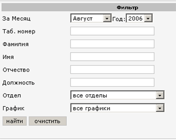
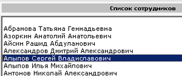
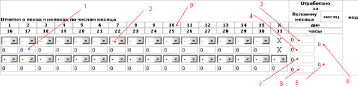
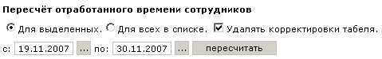

Табель предназначен для ввода корректировок отработанного времени сотрудника.
Введённые корректировки имееют больший приоритет по сравнению с числами, которые
выдала система т.е. при получении отчёта об отработанном времени в форме Т13 будут
учтены те изменения (корректировки) которые были внесены в табель. Проще говоря,
система заменит расчитанные значения времени на внесённые корректировки.
В обычном отчёте (не Т13) корректировки не учитываются.
Параметры фильтра
По параметрам фильтра выбираются сотрудники из базы данных.

Рис 1. Фильтр.
Поле "За месяц" - выбирается месяц и год за который редактируется табель
Поле "Таб.номер" - табельный номер сотрудника
Поле "Фамилия" - фамилия сотрудника
Поле "Имя" - имя сотрудника
Поле "Отчество" - отчество сотрудника
Поле "Должность" - должность сотрудника
Поле "Отдел" - список отделов
Поле "График" - список графиков
Для выполнения поиска по введённым в фильтр параметрам нужно нажать на кнопку Найти.Если необходимо сбросить введённые параметры нужно нажать на кнопку Очистить.
Внимание!!!. Если в параметрах фильтра не было указано ни одного параметра, в списке сотрудников отобразяться все сотрудники предприятия, а если общее число сотрудников велико, то при построение списка будет наблюдаться скоротечный эффект "зависания". В этом нет ничего страшного. Просто идёт формирование полученной информации для отображения.
Список сотрудников

Рис 2. Список сотрудников.
После выполнения поиска, справа от фильтра отобразится окно с найденными сотрудниками.
Для того, чтобы просмотреть отроаботанное время сотрудника за определённый месяц: нужно
сначала выбрать месяц в фильтре (поле "За месяц"),после чего дважды щелкнуть по фамилии
сотрудника в списке сотрудников. После получения данных о сотруднике из базы
они отобразяться в таблице(Рис.3).
Таблица отработанного времени
Рис.3 - Таблица с отработанным временем

1 - Ячейка содержит колличество часов за данный день месяца.
2 - Код.
3 - количество отработанных дней за первую половину месяца.
4 - количество отработанных часов за первую половину месяца.
5 - общее количество часов за месяц.
6 - общее количество дней за месяц.
7 - количество отработанных дней за вторую половину месяца.
8 - количество отработанных часов за вторую половину месяца.
9 - дни месяца
Таблица заполняется значениями, известными на текущую дату.
По умолчанию все значения равны нулю.Общее количество часов, дней рассчитывается
автоматически.
Редактирование
Для того, чтобы отредактировать количество часов нужного дня, необходимо
щелкнуть левой кнопкой мыши на ячейке, после чего она подсветится красным.
Вводим нужное значение. Редактирование кодов выполняется аналогично, только при
щелчке появится список кодов, из которого выбираем интересующий нас код.
После того как редактирование закончилось, введённые значения нужно сохранить,
для этого щёлкаем по кнопке  и ждём подтверждения о
сохранении.
и ждём подтверждения о
сохранении.
При возникновении каких либо нештатных ситуаций (например: отключение сервера СКУД или другие сбои системы ),
может возникнуть ситуация, когда отработанное время оказывается не посчитанным.
Для того что бы, при возникновении таких ситуаций, всё таки получить отработанное время,
можно его просто пересчитать.

Для того, чтобы пересчитать отработанное время, нужно:
1.Указать даты начала и конца интервала пересчёта (если нужно пересчитать за один день то даты начала и конца должны равны друг другу).
2.Указать сотрудников, для которых нужно пересчитать время.
После того, как с помощью фильтра Вы получили список сотрудников для пересчёта, нужно
указать следующее: расчитывать ли для всех сотрудников в списке, либо только для тех, которые
выбраны (подсвечены синим цветом). Для выбора нескольких сотрудников, щёлкните
левой кнопкой по ним удерживая зажатой клавишу Ctrl.
3.Поставить либо снять галочку "Удалять корректировки табеля".
Если галочка выставлена, то корректировки будут удалены.
4.Жмём кнопку "Пересчитать" и ждём, пока время пересчитается.
5.После того, как время пересчиталось, щёлкните дважды по сотруднику в списке сотрудников
для того что бы увидеть результаты пересчёта.